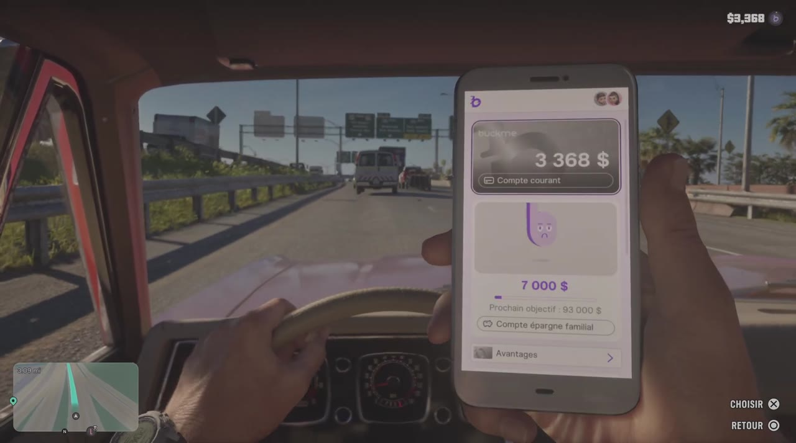
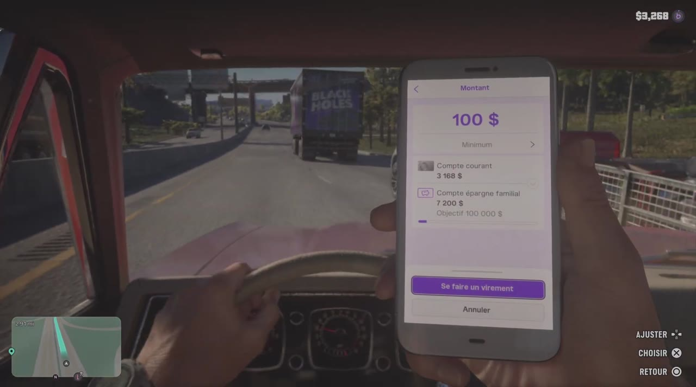
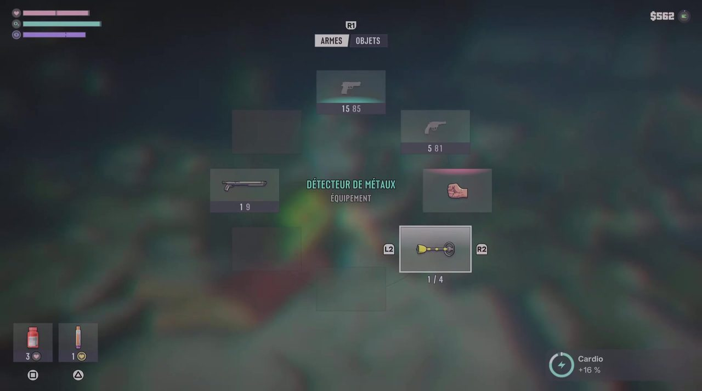
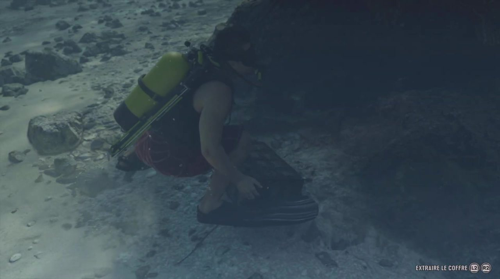
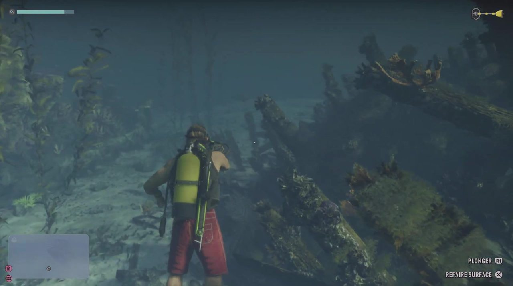

Argent au début de GTA 6 : 5 astuces pour ne pas finir fauché
Planque sous le plancher, plongées au trésor, voitures à revendre : ce qui marche dans les premiers chapitres, sans glitch.

Image : Rockstar Games (capture officielle)
À retenir
| Meilleure méthode au début | Les plongées au trésor dans les Leonida Keys |
|---|---|
| Combien | Environ 1 400 $ par épave (estimation OutputLag) |
| Contact | Kenton, dans sa boutique de Key Lento : commission sur les trésors + bonus |
| Outil | Le détecteur de métaux, dans la roue des objets sous l'eau |
| À éviter | Glitchs et duplication : risque de ban, on n'en parle pas ici |
Premier conseil, donné par Red Bull Gaming : ne fais pas une fixette sur l'argent. Au début de l'histoire, tu seras forcément un peu juste, c'est voulu. Dépense dans l'utile (armes, améliorations de véhicule) et ne farme pas chaque dollar.
1. Mets ton cash à l'abri. Si tu te fais arrêter ou tuer, tu peux perdre une partie de ce que tu as sur toi. Dans la chambre de Jason, une cachette sous le plancher sert de coffre en attendant d'avoir accès à la banque (BuckMe), selon GamerBolt.


2. Les plongées au trésor dans les Keys. D'après OutputLag, c'est la meilleure source d'argent au début : environ 1 400 dollars par épave, quasiment sans risque. Vice cite aussi ces plongées parmi les meilleures méthodes.



3. Revends des voitures volées. Selon Vice, c'est une méthode rapide dès le chapitre 1, puis auprès d'un receleur au chapitre 2.
4. Supérettes : prends la caisse et file. IGGM conseille de ne pas t'acharner sur le coffre, la police arrive trop vite.
5. Pense au dépôt : on ne peut pas déposer du cash par téléphone, il faut passer à un distributeur. Prévois ton trajet.
Ces astuces viennent des premiers guides publiés. On les teste en jeu et on te fait les vidéos.
Sources
- Red Bull – guide du débutant
- GamerBolt – 20 astuces
- OutputLag – guide argent
- Vice – argent rapide
- IGGM – économie
Testé par nous en jeu : en partie. Les captures viennent de nos parties sur PS5 ; le reste s'appuie sur les sources ci-dessus.
Une astuce GTA 6 par jour, en français et sans spoiler.
Suis-nous sur TikTok